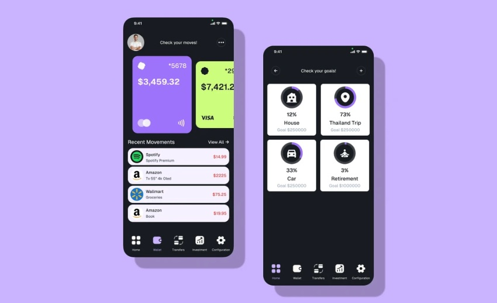
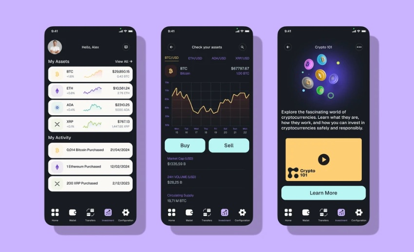

Forte
One place to manage money, invest and learn how both work. Un solo lugar para gestionar tu dinero, invertir y entender cómo funciona todo.

ContextContexto
Most banking apps show you your balance. Very few help you understand what to do with it.
Casi todas las apps de banca te enseñan tu saldo. Muy pocas te ayudan a entender qué hacer con él.
People juggle several accounts, cards and savings goals, and investing still feels like something for experts. Forte set out to bring account management, real-time investment data and financial education into a single, approachable app.
La gente maneja varias cuentas, tarjetas y objetivos de ahorro, e invertir sigue pareciendo cosa de expertos. Forte buscaba reunir en una sola app, fácil de usar, la gestión de cuentas, los datos de inversión en tiempo real y la educación financiera.
ProblemProblema
How might we help people control spending and reach their financial goals, without making money feel complicated or intimidating?
¿Cómo podemos ayudar a la gente a controlar sus gastos y alcanzar sus metas financieras sin que el dinero parezca complicado ni intimidante?
ProcessProceso
- EmpathiseEmpatizar
Interviews, surveys and observation to understand financial habits and pain points.
Entrevistas, encuestas y observación para entender hábitos financieros y puntos de dolor.
- DefineDefinir
Personas and empathy maps. Two core problems: fragmented tools and no accessible financial education.
Personas y mapas de empatía. Dos problemas clave: herramientas dispersas y ninguna educación financiera accesible.
- IdeateIdear
Brainstorming, SCAMPER and mind maps, then ideas scored on feasibility, impact and user fit.
Brainstorming, SCAMPER y mapas mentales; después, las ideas se puntuaron por viabilidad, impacto y encaje con el usuario.
- PrototypePrototipar
From low-fidelity wireframes to a high-fidelity prototype, iterating on every round of feedback.
De wireframes de baja fidelidad a un prototipo de alta fidelidad, iterando con cada ronda de feedback.
- Test
Several rounds of usability testing with real users before settling the final flows.
Varias rondas de tests de usabilidad con usuarios reales antes de cerrar los flujos finales.
Research
Surveys showed a young, well-educated audience that already uses banking apps daily. They care most about balance checks, transfers and alerts, and they showed strong interest in learning about finance. Interviews added the rest: a need for an interface that is easy to navigate, with budgeting, investing and real-time notifications in the same place.
Las encuestas mostraron un público joven y con estudios que ya usa apps de banca a diario. Lo que más valoran es consultar el saldo, hacer transferencias y recibir alertas, y mostraron mucho interés por aprender de finanzas. Las entrevistas completaron el cuadro: necesitaban una interfaz fácil de navegar, con presupuestos, inversión y notificaciones en tiempo real en el mismo sitio.


SolutionSolución
Forte brings accounts, spending, savings goals and investments into one dark, focused interface. Goals are shown as progress, not spreadsheets. Investing screens pair live charts with short, plain-language explanations, so learning happens in context.
Forte reúne cuentas, gastos, objetivos de ahorro e inversiones en una interfaz oscura y centrada. Los objetivos se muestran como progreso, no como hojas de cálculo. Las pantallas de inversión combinan gráficos en tiempo real con explicaciones breves y en lenguaje claro, para que el aprendizaje ocurra en contexto.


TakeawaysAprendizajes
Combining surveys with interviews gave us both the numbers and the stories behind them, and that guided every product decision. Users responded well to how easy the app was to use and to the sense of security, and those findings are the starting point for the next iterations.
Combinar encuestas y entrevistas nos dio tanto los datos como las historias detrás de ellos, y eso guió cada decisión de producto. A los usuarios les gustó lo fácil que era usar la app y la sensación de seguridad, y esas conclusiones son el punto de partida de las siguientes iteraciones.